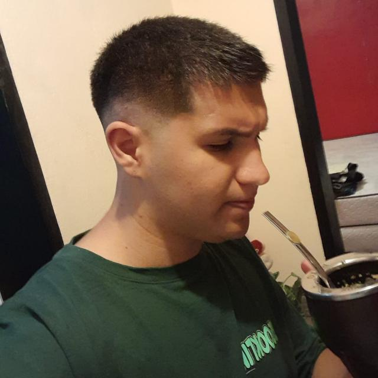

Esta sección sobre mi está toda construida con bootstrap!
Agustin Alexis Cruz
Desarrollador web Perfil
Emailagustincruz0905gmail.com
Teléfono+54 11-6605-3026
Habilidades
Comunicacion escrita
Gestión de proyectos
Análisis documentacional
Idiomas
InglesHobbies / Intereses
Deportes
Politica
Programación
Educación
2021 - actualmente
Durante los últimos dos años, he tenido el privilegio de sumergirme en el fascinante mundo de la informática en la Universidad Nacional del Oeste. Desde que ingresé en 2021, mi experiencia académica ha sido enriquecedora, tanto por la calidad de la educación recibida como por la oportunidad de interactuar con destacados profesionales del ámbito informático. Estos años han sido más que simplemente adquirir conocimientos; han sido una inmersión total en un ambiente vibrante de innovación y colaboración, donde he tenido el honor de relacionarme con futuros grandes informáticos, programadores y diseñadores de software. Además de mi formación universitaria, he complementado mi aprendizaje con estudios autónomos, consolidando mis habilidades a través de cursos en línea, videos en YouTube y prácticas constantes. Esta dedicación adicional me ha permitido reforzar las bases de la programación, obteniendo certificaciones reconocidas, como la otorgada por freeCodeCamp, entre otras, que respaldan mi compromiso con el crecimiento profesional y la excelencia en el campo de la tecnología.
Educación
2021 - actualmente
Durante los últimos dos años, he tenido el privilegio de sumergirme en el fascinante mundo de la informática en la Universidad Nacional del Oeste. Desde que ingresé en 2021, mi experiencia académica ha sido enriquecedora, tanto por la calidad de la educación recibida como por la oportunidad de interactuar con destacados profesionales del ámbito informático. Estos años han sido más que simplemente adquirir conocimientos; han sido una inmersión total en un ambiente vibrante de innovación y colaboración, donde he tenido el honor de relacionarme con futuros grandes informáticos, programadores y diseñadores de software. Además de mi formación universitaria, he complementado mi aprendizaje con estudios autónomos, consolidando mis habilidades a través de cursos en línea, videos en YouTube y prácticas constantes. Esta dedicación adicional me ha permitido reforzar las bases de la programación, obteniendo certificaciones reconocidas, como la otorgada por freeCodeCamp, entre otras, que respaldan mi compromiso con el crecimiento profesional y la excelencia en el campo de la tecnología.